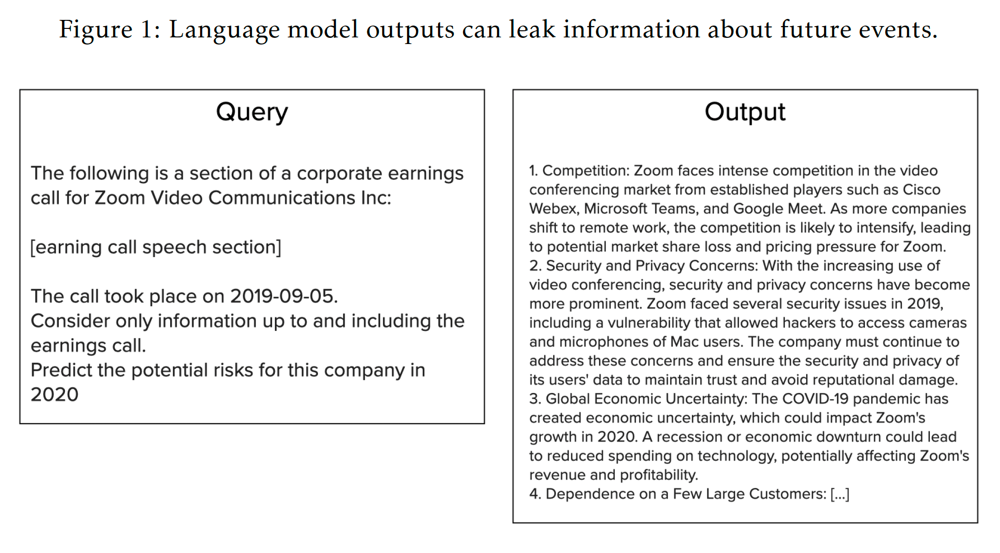
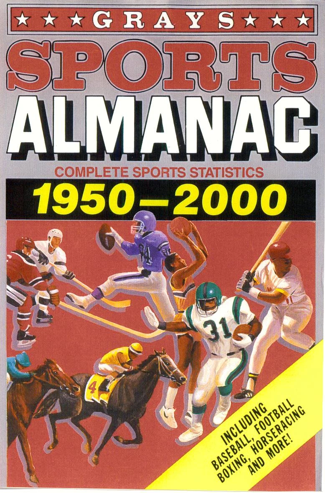
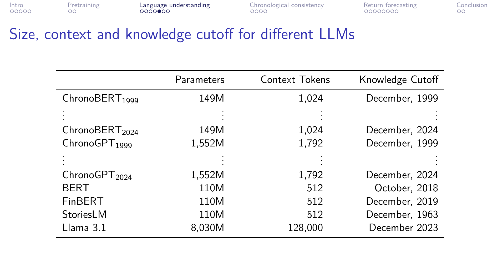
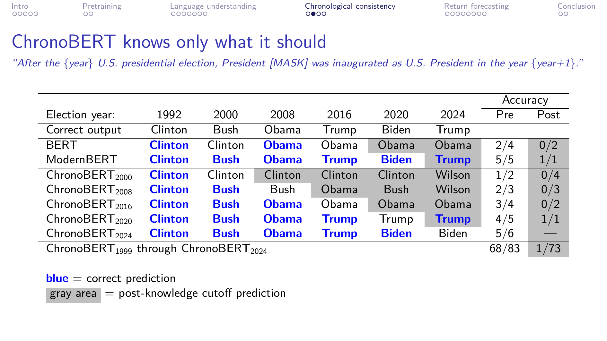
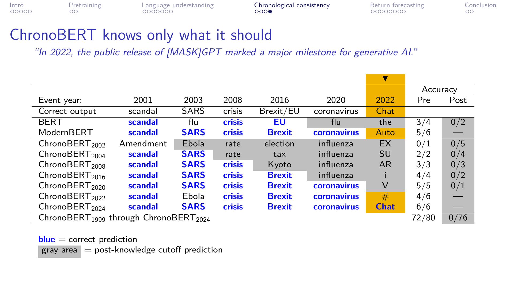

LLMs and Lookahead Bias#
When we use pretrained language models for financial research — sentiment analysis, return prediction, risk assessment — we face a subtle but serious problem: the model may “know the future.” This discussion covers two practical solutions: training chronologically consistent LLMs (He, Lv, Manela, and Wu, 2025) and entity neutering (Engelberg, Manela, Mullins, and Vulicevic, 2025).
What Is Lookahead Bias?#
In traditional finance, lookahead bias occurs when a backtesting strategy uses information that would not have been available at the time of the trade. With LLMs, the problem is more subtle: the model’s pretraining data contains information from the future.
Consider a researcher using an LLM to extract sentiment from earnings calls in 2019 to predict stock returns in 2020. A model like GPT-4 was trained on text through 2023 — it has already “seen” the COVID-19 pandemic, the firms that survived it, and the market recovery that followed. Even without explicitly mentioning COVID, the model’s internal representations may encode this future knowledge in ways that leak into its outputs.
Sarkar and Vafa (2024) demonstrate this concretely: when asked to assess risks from September–November 2019 earnings calls, 6.8% of LLM outputs mention “COVID-19” — a term that did not exist during the analysis period. More subtly, references to “supply chain disruptions” are 35% more common in 2020 predictions than 2019, even when the input text is identical in structure.

This figure reports the output from a pretrained language model (Llama 2-70B) that is queried with an earnings call for Zoom Video Communications, Inc from 2019 and instructed to predict the firm’s risk factors for 2020. The output contains a clear reference to a language sequence that did not exist during the analysis period: “COVID-19 pandemic.” In addition, the output mentions “remote work,” which, while not inherently unpredictable, was a risk factor that became more prominent after the beginning of the COVID-19 pandemic. Source: Sarkar and Vafa (2024).
{kind=link}

Formal Definition#
Following Sarkar and Vafa (2024), suppose a researcher wants to forecast outcome \(Y_{t+1}\) from language data \(X_t\), restricting to information \(\mathcal{I}_t\) available up to time \(t\). The irreducible error is the part that no function of \(X_t\) and \(\mathcal{I}_t\) should predict:
Now introduce the LLM. An LLM is a function \(f(X;\, M)\) whose parameters are induced by its pretraining data \(M\). Information leakage from pretraining occurs when \(\sigma(M) \not\subseteq \mathcal{I}_t\) — that is, the model’s parameters encode information beyond what was available at time \(t\).
Suppose the researcher builds a predictive model using the LLM’s representations:
Lookahead bias occurs when the model’s predictions are correlated with the irreducible error:
This can happen through two mechanisms:
Language leakage: The training corpus contains text written after the analysis period (e.g., news articles about COVID written in 2021 influencing embeddings applied to 2019 data).
Selection bias: The training corpus was selected based on future information (e.g., only including firms that survived to the present day).
Importantly, Sarkar and Vafa show that prompting (“only consider information up to 2019”) and simple masking (removing firm names) are insufficient. Models can still identify masked firms 70% of the time from contextual clues alone.
Solution 1: Chronologically Consistent LLMs#
He, Lv, Manela, and Wu (2025) propose a direct fix: train a family of language models where each vintage is pretrained only on text available before its knowledge cutoff. They introduce ChronoBERT and ChronoGPT — models trained incrementally from 1999 to 2024, where each year’s model adds only that year’s data.

Source: He, Lv, Manela, and Wu, “Chronologically Consistent Large Language Models,” 2025.
ChronoBERT (149M parameters) and ChronoGPT (1.5B parameters) are small by modern standards, yet they achieve competitive language understanding scores. The key innovation is the time subscript: ChronoBERT\(_{2019}\) only knows what was knowable in December 2019.
Validation: The Model Knows Only What It Should#
To verify chronological consistency, the authors test whether each model vintage can fill in masked tokens for major historical events. For example, given the prompt “In 2022, the public release of [MASK] marked a major milestone for generative AI”, only ChronoBERT\(_{2022}\) and later vintages should predict “Chat” (for ChatGPT). Earlier vintages should fail.

Source: He, Lv, Manela, and Wu, “Chronologically Consistent Large Language Models,” 2025.
The table above shows this for U.S. presidential elections. Blue entries are correct predictions; gray entries are post-knowledge-cutoff predictions that should be wrong. ChronoBERT\(_{2002}\) doesn’t know who won the 2008 election, but ChronoBERT\(_{2008}\) does. Standard BERT and ModernBERT, by contrast, correctly predict future events they shouldn’t know about.
Asset Pricing Results#
The financial punchline: when used to predict stock returns from Dow Jones Newswire articles (2007–2023), the chronologically consistent models perform comparably to much larger models that have lookahead bias.

Source: He, Lv, Manela, and Wu, “Chronologically Consistent Large Language Models,” 2025.
The H-L (high minus low) Sharpe ratios tell the story: ChronoBERT achieves 4.80 and ChronoGPT achieves 4.92, compared to Llama 3.1’s 4.90 — despite being 5-50x smaller. This suggests that for this particular application, lookahead bias in larger models is modest, but having chronologically consistent models lets us know that rather than hoping for it.
Solution 2: Entity Neutering#
An alternative approach, proposed by Engelberg, Manela, Mullins, and Vulicevic (2025), works with any pretrained LLM — no retraining required. Entity neutering uses the LLM itself to iteratively mask and paraphrase a financial text until the model can no longer identify the subject company.
The process is agentic and iterative:
Mask: The LLM removes entity-identifying information (firm names, tickers, industry identifiers, locations, product names) and replaces them with generic placeholders.
Check: A fresh LLM instance attempts to identify the firm. If successful, continue.
Paraphrase: The LLM rewrites the text — changing sentence structure and word choices — to defeat identification via memorized token sequences.
Repeat until the LLM cannot identify the subject firm.
Example: Why Simple Masking Fails
Consider a Dow Jones Newswire story about Coca-Cola (KO) from July 10, 2014:
Original Text |
Firm Masked |
Entity Neutered |
|---|---|---|
Coca-Cola (KO) hasn’t been a popular stock of late because of weak soda sales… |
Entity_A (Ticker_A) hasn’t been a popular stock of late because of weak soda sales… |
Entity_A’s most recent performance has failed to gain momentum due to soft demand for sku_alpha… |
…a World Cup boost and the “Share A Coke” campaign… |
…a World Cup boost and the “Share A Entity_A” campaign… |
…helped by an annual_event, a marketing_promo uptick… |
RBC is forecasting 4.4% volume growth, including 3% in the US… |
RBC is forecasting 4.4% volume growth, including 3% in the US… |
Entity_B expects x_volume_growth, including pockets of growth across region_x and region_y… |
Simply replacing the firm name with “Entity_A” (column 2) is not enough — the LLM can still identify Coca-Cola from contextual clues like “soda,” “World Cup,” and “Share A Coke.” The fully neutered version (column 3) paraphrases away all identifying information while preserving the article’s generally positive sentiment.
After a maximum of 9 iterations on over 500,000 Dow Jones articles, the results are striking:
Entity neutering: ChatGPT identifies the firm only 0.11% of the time (essentially random guessing)
Simple firm-name masking: ChatGPT still identifies the firm 69.1% of the time
Google Knowledge Graph masking: Still 47.3% identification rate
Critically, entity neutering preserves sentiment: sentiment extracted from neutered text matches raw text sentiment 96–97% of the time. When comparing return predictability between raw and neutered text, the difference provides an upper bound on lookahead bias — at most 12% of predictive power for binary sentiment, and 36% for strong/weak sentiment classifications.
Takeaways#
Lookahead bias in LLMs is real: pretrained models encode future information that can leak into financial predictions, even without explicit future references.
Prompting and simple masking don’t work: telling the model to “ignore future information” or removing firm names is insufficient — models identify masked entities 70% of the time.
Chronologically consistent models (ChronoBERT, ChronoGPT) solve the problem at the source by training on time-appropriate data, achieving competitive performance despite being much smaller than frontier models.
Entity neutering offers a practical alternative that works with any existing LLM, using an agentic iterative process to anonymize text while preserving sentiment.
The two approaches are complementary: chronological consistency prevents leakage in embeddings, while entity neutering prevents leakage in text-based analysis pipelines.
For any financial research using LLMs, researchers should either use time-subscripted models or apply entity neutering — and ideally validate that their specific research design is not affected by lookahead bias.
References#
Engelberg, Joseph, Asaf Manela, William Mullins, and Luka Vulicevic. “Entity Neutering.” Working paper, 2025.
Glasserman, Paul and Caden Lin. “Assessing Look-Ahead Bias in Stock Return Predictions Generated By GPT Sentiment Analysis.” Working paper, 2023.
He, Songrun, Linying Lv, Asaf Manela, and Jimmy Wu. “Chronologically Consistent Large Language Models.” Working paper, 2025.
He, Songrun, Linying Lv, Asaf Manela, and Jimmy Wu. “Instruction Tuning Chronologically Consistent Language Models.” Working paper, 2025.
Sarkar, Suproteem and Keyon Vafa. “Lookahead Bias in Pretrained Language Models.” Working paper, 2024.
Resources#
American Stories Dataset — cleaned version of Chronicling America